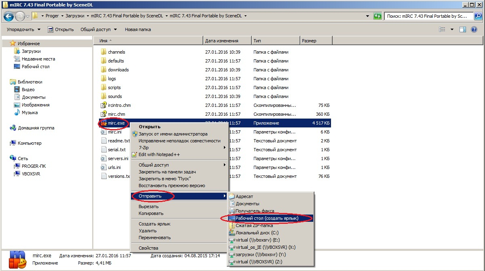
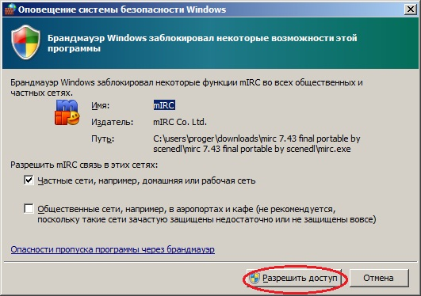

Скачать архив с программой mIRC.
СкачатьРаспокавать скаченный архив
Создать ярлык на рабочий стол
Запустить mIRC.exe
Сменить ник.
Подключиться к серверу.
Если появится оповещение, нажмите "Разрешить доступ"
Приятного общения.
В папке с mirc.exe есть файл serial.txt, в котором находятся данные для активации mIrc.